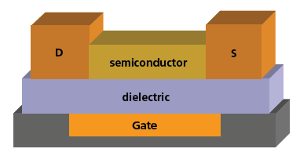

MONITORES TFT
INTRODUCCIÓN


-El TFT (Thin-Film Transitor) es un transistor especial que se compone de:
- Película Fina de un Material Semiconductor
- una Capa de Material Dieléctrico
- unos Contactos Metálicos sobre un sustrato de soporte
-Las pantallas TFT son pantallas de matriz líquida activa,
donde cada píxel se ilumina de manera independiente y es de las mejores pantallas LCD encolor.
-Se usan para multitud de dispositivos desde móviles, monitores, PC hasta cámaras digitales, aplicaciones para el hogar, etc.
-Se usan para multitud de dispositivos desde móviles, monitores, PC hasta cámaras digitales, aplicaciones para el hogar, etc.
TIPOS
Podemos distinguir entre 3 modelos:
Twisted Neumatic
INFO
Vertical Alignment
INFO
In-Plane Switching
INFO
FUNCIONAMIENTO

Se envían los datos desde el ordenador hacia los circuitos de la pantalla.
La pantalla tiene un microprocesador que determina la posición de cada uno de los pixeles de la pantalla.
En el momento en el que se determina los píxeles a colorear, las capas de película fina al recibir corriente de los electrodos se activan.
La intensidad de la corriente determina la saturación de los píxeles.
Todo esto ocurre cada vez que se actualiza la imagen.
INSTALACIÓN
Podemos seguir este video ilustrativo para conectar nuestro monitor a nuestro ordenador.
En este proceso lo unico que puede variar es el conector de video a usar.
En este proceso lo unico que puede variar es el conector de video a usar.
Debemos seguir como es lógico el manual de instrucciones que venga con el monitor.
MARCAS
En su mayoría encontramos marcas chinas que son las que mostraremos:


PRECIOS
Llegamos al punto final y al más importante: